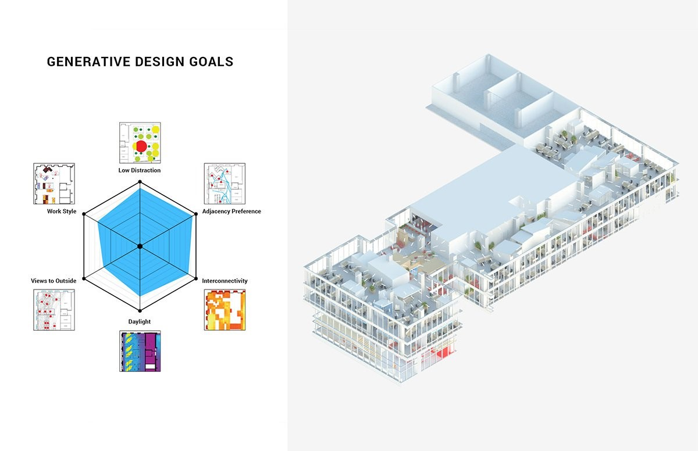
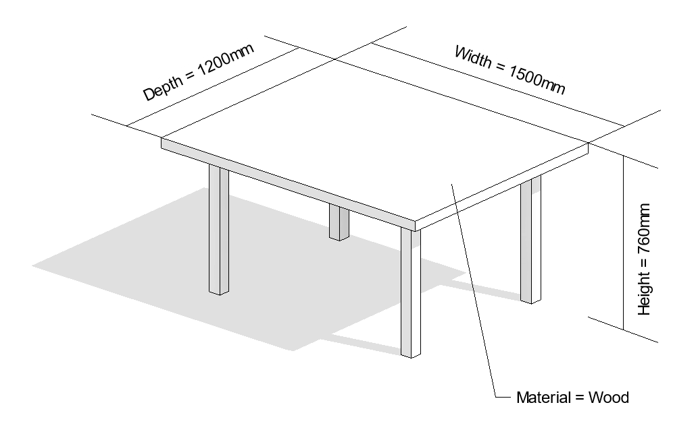

An Example of Generative Design
Let’s look at several examples that illustrate how generative design can help you achieve your design challenges.
Building Design
For the design of the new office and research space in the MaRs Innovation District of Toronto, Autodesk leveraged generative design for architecture. We started with high-level goals and constraints and then used the power of computation to generate, evaluate, and evolve thousands of design options. The result is a high-performing and novel work environment for Autodesk that would not have been possible to create without this approach.
To begin the process data was collected from employees and managers about work styles and location preferences. Based on this information six primary and measurable goals were defined:
- work style preference
- adjacency preference
- low distraction
- interconnectivity
- daylight
- views to the outside
A geometric system was then created by the designer that allowed the exploration of multiple configurations of work neighborhoods, amenities and circulation. The designer also creates an algorithm to measure how different floor plans can be measured against the stated goals above.
The computer used this algorithm to flex the model producing thousands of design options and scoring the outputs against the predefined goals.
The designer then evaluated the best options that were returned to make a decision on the design.

Product Design
Looking at a simpler example, if you consider the process of designing a typical, four-legged table. Using a standard approach, a designer would manually define the height, width, depth & material of the table, and the resultant output would be a single, physical object with a fixed, immutable form. Perhaps the designer tests several distinct sets of dimensions & material combinations and ends up with three or four table prototypes.

In the generative approach, the designer would instead specify:
- a range of permissible values for each dimension
- a series of available materials and their properties (such as cost)
- a set of goals that measure how successful a table design is
The designer would then use the computer to help him/her generate a series of designs falling within the specified range. Some designs will be short and wide, others will be tall and thin, but each will be consistent with the user-defined parameters. This is key, dozens of designs can be generated in an instant, much more than any human could feasibily examine, so that the best ones can easily be identified.
As you can see, this describes a fairly generic process, which is why there are so many possible applications of generative design, in areas as diverse as aviation, automotive and building design, manufacturing, and product design.